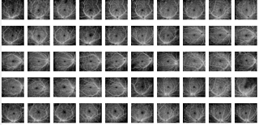
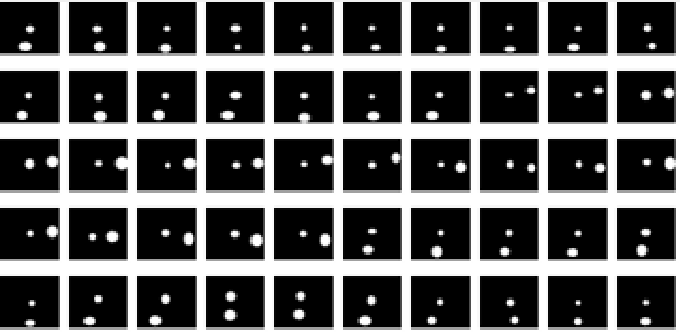
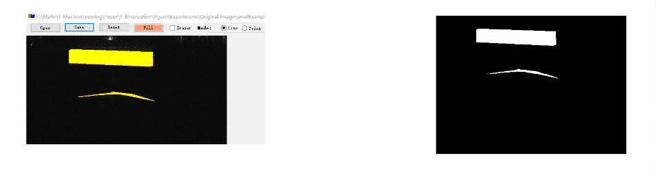
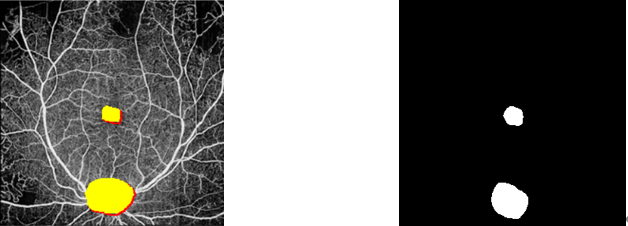
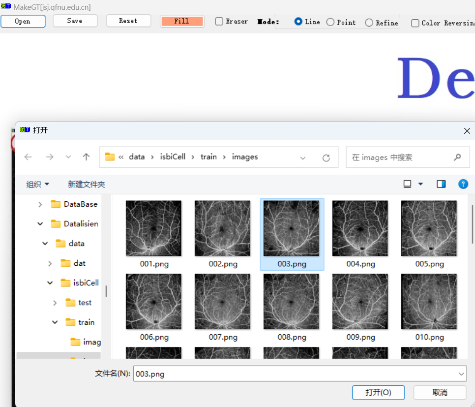
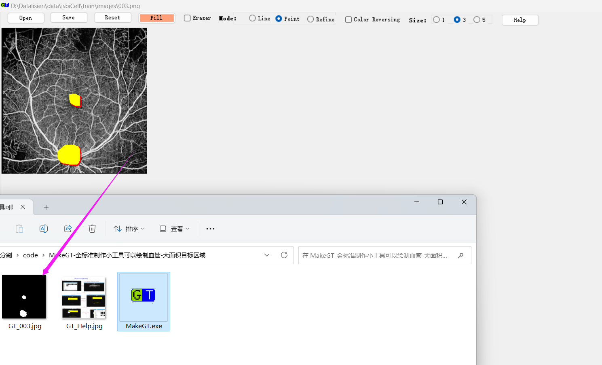

A new OCTA Image dataset for Optic Disc and Macular Segmentation
--------------------------------------------------------------------------------------------------------------------------------------------
Coarse and Fine Attention-Based network (CFANet) for segmentation 2023.7.9.,
Permission to use copy, or modify this dataset, tool and codes for educational and research purposes.
E-mail : lisienkyanbis（at）163.com
Homepage : https://github.com/kyanbis/CFANET
--------------------------------------------------------------------------------------------------------------------------------------------
1. Dataset Description
Our dataset is based on the OCTA technique, by using the SS-OCT system to obtain the eye images of 50 people of different age groups.
All optic disc and macula images are annotated by experienced doctors. To protect the privacy of people,
the information of optic disc and macula images is anonymous during the construction of the optic disc and macula dataset.
According to the characteristics of OCTA images, we can examine the choroidal vessels on the basis of OCTA images.
The choroidal vessels are not easily distinguished due to the presence of complex structures in the ocular tissue features.
The optic disc and macula are usually located in the plane of the retinal nerve fiber layer with an inner boundary membrane covering the surface.
Therefore, we could determine the boundaries between the retinal nerve fiber layer and the anterior sieve plate area, the sieve plate area, and the posterior go of the sieve plate.
However, in our study, the areas of optic disc and macular lesions often appeared in the retinal nerve fiber layer. To clearly segment the optic disc and macular lesions, the
we chose the retinal nerve fiber layer and the sieve plate area to segment the optic disc and macular lesion.
This dataset will be soon released publicly. The ground-truth samples were manually made by our experts, which are aided with our self-developed software.
The data-set is captured by wide-field OCTA(WF-OCTA). The optic disc and macula dataset contains pixel-level labels and image-level labels of 288 $\times$ 288 pixels.
This dataset will be soon released publicly. The ground-truth samples were manually made by our experts, which are aided with our self-developed software.
2.1 The making ground-truth tool developed by our team can be downloaded with URL：MakeGroundtruthTool_v1.01 (windows desktop app at .netframework2.0).This software is a specialized tool to make the ground truth from original samples under complex scene. The ground-truth images can be obtained by this tool with the help in Fig.2, which is developed by our team. This application is run under .netframework2.0(win-x64) with windows 10 (x86 or x64).
2.2 The ground-truth tool developed by our team can be downloaded with URL：MakeGroundtruthTool_v1.0 (windows desktop app at .net 5.0).This software is a specialized tool to make the ground truth from original samples under complex scene. The ground-truth images can be obtained by this tool with the help in Fig.2, which is developed by our team. This application is run under .net 5.0 runtime(win-x86) with windows 10 (x86 or x64).
2.3 The key code of our approach (CFANet) for demo can be downloaded here (Pytorch).
2.4 The code of U-Net for demo can be downloaded here (Pytorch).
--------------------------------------------------------------------------------------------------------------------------------------------
FIGURE 1 The thumbnail view of the Dataset for nonperfusion areas
The Original Image 
The Ground-truth 
--------------------------------------------------------------------------------------------------------------------------------------------
FIGURE 2 The help for the ground-truth tool(MakeGT, it can make GT for several types of scenes.)




--------------------------------------------------------------------------------------------------------------------------------------------
Figure shows the detailed schematic diagram of SS‐OCT system. The light from the swept light source passes through the beam splitter and enters reference and sample arms, respectively. The light power from the swept source was split 90% into the sample arm and 10% into the reference arm by a fiber coupler. In the sample arm, the light from swept source component reaches retina through a fiber coupler and collimation lens. In the reference arm, the light passes through a collimator and a focusing lens and a mirror reflects the light beam. The light from the reference and sample arms generates interference in a fiber coupler with a ratio of 50:50, and then was redirected toward a balance detector. Electronic signals from the detector were input into the computer.